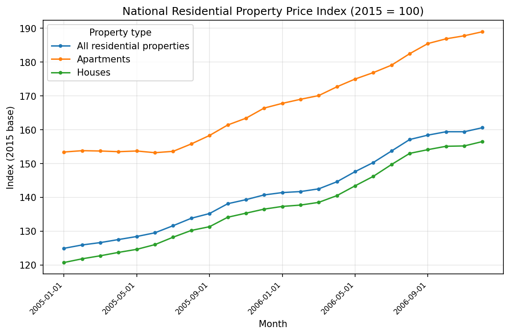
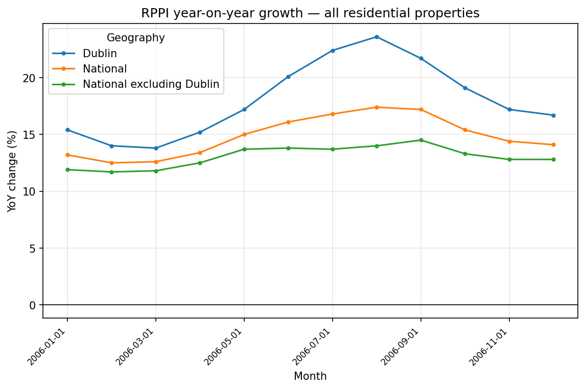
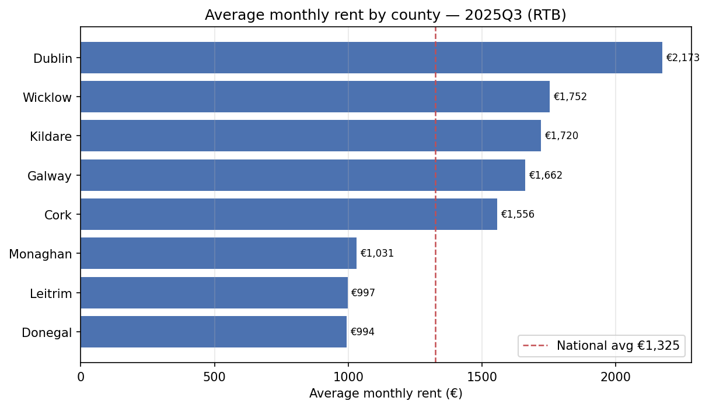

The question
How affordable is Irish housing, and how does it vary by region and county?
The project tracks the residential property price index over time — boom, crash, recovery —
alongside standardised rents by county, and derives affordability signals such as year-on-year
growth, the Dublin premium, and price-to-rent ratios. Small verified data
extracts are committed so the repo runs immediately; the ETL pulls the full current series from
the live CSO API with make full.
Sample findings
From the committed sample data (2005–2006 RPPI · 2025Q3 RTB rents).
Average monthly rent in Dublin, 2025Q3 — +64% above the €1,325 national average, matching the RTB's own headline.
National house-price growth year-on-year through 2006 — the tail of the Celtic-Tiger boom, before the 2007–08 downturn.
Cheapest county to rent (Donegal), followed by Leitrim (€997) and Monaghan (€1,031) — roughly half the Dublin figure.
Explore the charts
Rendered by notebooks/exploratory_charts.py from the star-schema
database. Date-agnostic: the sample shows 2005–2006 prices and 2025Q3 rents; after
make full the same script renders the full CSO/RTB history.

National price index by property type. The RPPI (2015 = 100) for all residential properties, houses, and apartments. On the sample all three climb steeply — the tail end of the Celtic-Tiger boom.

Year-on-year price growth by region. National vs Dublin vs National-excluding-Dublin. Through 2006 Dublin runs consistently hotter than the national figure, which sits above the rest of the country — Dublin YoY peaks above 23%.

Average monthly rent by county. RTB standardised average monthly rent for the latest available quarter, with the national average marked. On the seed (2025Q3) Dublin is the most expensive at €2,173/month, roughly double the cheapest counties.
How it fits together
A conformed-dimension star schema, so one slicer filters both price and rent visuals.
CSO PxStat API ──▶ etl/extract_cso.py ──▶ data/processed/*.csv
│
data/sample + data/seed ─────────────────────┤
▼
etl/load_sqlite.py ──▶ affordability.db (star schema)
▼
sql/analysis/*.sql + Power BI
fact_rppi (month × geography × property type) and
fact_rent (quarter × county) share dim_date, dim_geography,
and dim_property_type. See the
entity-relationship diagram and
data dictionary.
What's in the repo
- SQL — star-schema DDL, a reusable views layer, and analysis queries: YoY growth, Dublin-vs-rest, county rent ranking, rolling 12-month growth, price-to-rent ratio, and county rent-growth ranking (window functions, self-joins, CTEs).
- Python ETL —
extract_cso.py(JSON-stat API pull) andload_sqlite.py(builds the DB from committed data), standard library only. - Data quality — a stdlib gate checking row counts, null rates, referential integrity, grain uniqueness, and RPPI month-gap continuity.
- Power BI — a model, DAX, and report specification in
powerbi/POWER_BI_GUIDE.md.